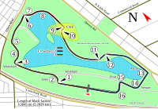
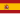
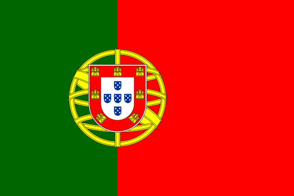

| Ronda | Fecha | Gran Premio | Mapa del Circuito | Resultados |
|---|---|---|---|---|
| 1 | 6 de marzo |
Gran Premio de Australia Circuito de Albert Park Ganador 2004: |
 |
Libres 1: Libres 2:  Pedro de la Rosa Libres 3: Libres 4: Pole position: Ganador: 2.º puesto: 3.º puesto: Fernando Alonso Vuelta rápida: Fernando Alonso (1:25.683) |
| Ronda | Fecha | Gran Premio | Mapa del Circuito | Resultados |
|---|---|---|---|---|
| 2 | 20 de marzo |
Gran Premio de Malasia Circuito Internacional de Sepang Ganador 2004: |
Libres 1: Libres 2: Libres 3: Fernando Alonso Libres 4: Pole position: Fernando Alonso (3:07.672) Ganador: Fernando Alonso 2.º puesto: 3.º puesto: Vuelta rápida: |
| Ronda | Fecha | Gran Premio | Mapa del Circuito | Resultados |
|---|---|---|---|---|
| 3 | 3 de abril |
Gran Premio de Baréin Circuito Internacional de Baréin Ganador 2004: |
 |
Libres 1: Libres 2: Libres 3: Libres 4: Pole position: Fernando Alonso (3:01.902) Ganador: Fernando Alonso 2.º puesto: 3.º puesto: Vuelta rápida: Pedro de la Rosa (1:31.447) |
| Ronda | Fecha | Gran Premio | Mapa del Circuito | Resultados |
|---|---|---|---|---|
| 4 | 24 de abril |
Gran Premio de San Marino Autodromo Enzo e Dino Ferrari Ganador 2004: |
 |
Libres 1: Pedro de la Rosa Libres 2: Pedro de la Rosa Libres 3: Libres 4: Pole position: Ganador: Fernando Alonso 2.º puesto: 3.º puesto: Vuelta rápida: |
| Ronda | Fecha | Gran Premio | Mapa del Circuito | Resultados |
|---|---|---|---|---|
| 5 | 8 de mayo |
Gran Premio de España Circuito de Barcelona-Cataluña Ganador 2004: |
Libres 1: Pedro de la Rosa Libres 2: Pedro de la Rosa Libres 3: Libres 4: Pole position: Ganador: 2.º puesto: Fernando Alonso 3.º puesto: Vuelta rápida: |
| Ronda | Fecha | Gran Premio | Mapa del Circuito | Resultados |
|---|---|---|---|---|
| 6 | 22 de mayo |
Gran Premio de Mónaco Circuito de Mónaco Ganador 2004: |
Libres 1: Libres 2: Fernando Alonso Libres 3: Libres 4: Pole position: Ganador: 2.º puesto: 3.º puesto: Vuelta rápida: |
| Ronda | Fecha | Gran Premio | Mapa del Circuito | Resultados |
|---|---|---|---|---|
| 7 | 29 de mayo |
Gran Premio de Europa Nürburgring Ganador 2004: |
 |
Libres 1: Libres 2: Libres 3: Fernando Alonso Libres 4: Pole position: Ganador: Fernando Alonso 2.º puesto: 3.º puesto: Vuelta rápida: Fernando Alonso (1:30.711) |
| Ronda | Fecha | Gran Premio | Mapa del Circuito | Resultados |
|---|---|---|---|---|
| 8 | 12 de junio |
Gran Premio de Canadá Circuito Gilles Villeneuve Ganador 2004: |
Libres 1: Pedro de la Rosa Libres 2: Pedro de la Rosa Libres 3: Fernando Alonso Libres 4: Pole position: Ganador: 2.º puesto: 3.º puesto: Vuelta rápida: |
| Ronda | Fecha | Gran Premio | Mapa del Circuito | Resultados |
|---|---|---|---|---|
| 9 | 19 de junio |
Gran Premio de los Estados Unidos Indianapolis Motor Speedway Ganador 2004: |
Libres 1: Libres 2: Libres 3: Libres 4: Pole position: Ganador: 2.º puesto: 3.º puesto:  Tiago Monteiro Vuelta rápida: |
| Ronda | Fecha | Gran Premio | Mapa del Circuito | Resultados |
|---|---|---|---|---|
| 10 | 3 de julio |
Gran Premio de Francia Circuito de Nevers Magny-Cours Ganador 2004: |
Libres 1: Pedro de la Rosa Libres 2: Pedro de la Rosa Libres 3: Fernando Alonso Libres 4: Pole position: Fernando Alonso (1:14.412) Ganador: Fernando Alonso 2.º puesto: 3.º puesto: Vuelta rápida: |
| Ronda | Fecha | Gran Premio | Mapa del Circuito | Resultados |
|---|---|---|---|---|
| 11 | 10 de julio |
Gran Premio de Gran Bretaña Circuito de Silverstone Ganador 2004: |
Libres 1: Pedro de la Rosa Libres 2: Pedro de la Rosa Libres 3: Fernando Alonso Libres 4: Pole position: Fernando Alonso (1:19.905) Ganador: 2.º puesto: Fernando Alonso 3.º puesto: Vuelta rápida: |
| Ronda | Fecha | Gran Premio | Mapa del Circuito | Resultados |
|---|---|---|---|---|
| 12 | 24 de julio |
Gran Premio de Alemania Hockenheimring Ganador 2004: |
Libres 1: Libres 2: Libres 3: Libres 4: Pole position: Ganador: Fernando Alonso 2.º puesto: 3.º puesto: Vuelta rápida: |
| Ronda | Fecha | Gran Premio | Mapa del Circuito | Resultados |
|---|---|---|---|---|
| 13 | 31 de julio |
Gran Premio de Hungría Hungaroring Ganador 2004: |
Libres 1: Libres 2: Libres 3: Libres 4: Pole position: Ganador: 2.º puesto: 3.º puesto: Vuelta rápida: |
| Ronda | Fecha | Gran Premio | Mapa del Circuito | Resultados |
|---|---|---|---|---|
| 14 | 21 de agosto |
Gran Premio de Turquía Circuito de Estambul Ganador 2004: |
Libres 1: Pedro de la Rosa Libres 2: Libres 3: Libres 4: Pole position: Ganador: 2.º puesto: Fernando Alonso 3.º puesto: Vuelta rápida: |
| Ronda | Fecha | Gran Premio | Mapa del Circuito | Resultados |
|---|---|---|---|---|
| 15 | 4 de septiembre |
Gran Premio de Italia Autodromo Nazionale di Monza Ganador 2004: |
Libres 1: Pedro de la Rosa Libres 2: Libres 3: Libres 4: Pole position: Ganador: 2.º puesto: Fernando Alonso 3.º puesto: Vuelta rápida: |
| Ronda | Fecha | Gran Premio | Mapa del Circuito | Resultados |
|---|---|---|---|---|
| 16 | 11 de septiembre |
Gran Premio de Bélgica Circuito de Spa-Francorchamps Ganador 2004: |
Libres 1: Libres 2: Libres 3: Libres 4: Fernando Alonso Pole position: Ganador: 2.º puesto: Fernando Alonso 3.º puesto: Vuelta rápida: |
| Ronda | Fecha | Gran Premio | Mapa del Circuito | Resultados |
|---|---|---|---|---|
| 17 | 25 de septiembre |
Gran Premio de Brasil Autódromo José Carlos Pace Ganador 2004: |
Libres 1: Libres 2: Libres 3: Fernando Alonso Libres 4: Pole position: Fernando Alonso (1:11.988) Ganador: 2.º puesto: 3.º puesto: Fernando Alonso Vuelta rápida: |
| Ronda | Fecha | Gran Premio | Mapa del Circuito | Resultados |
|---|---|---|---|---|
| 18 | 9 de octubre |
Gran Premio de Japón Circuito de Suzuka Ganador 2004: |
Libres 1: Pedro de la Rosa Libres 2: Libres 3: Libres 4: Pole position: Ganador: 2.º puesto: 3.º puesto: Fernando Alonso Vuelta rápida: |
| Ronda | Fecha | Gran Premio | Mapa del Circuito | Resultados |
|---|---|---|---|---|
| 19 | 16 de octubre |
Gran Premio de China Circuito Internacional de Shanghái Ganador 2004: |
Libres 1: Pedro de la Rosa Libres 2: Pedro de la Rosa Libres 3: Libres 4: Pole position: Fernando Alonso (1:34.080) Ganador: 2.º puesto: 3.º puesto: Vuelta rápida: |
.png) Vitantonio Liuzzi
Vitantonio Liuzzi Michael Schumacher
Michael Schumacher Kimi Räikkönen
Kimi Räikkönen Rubens Barrichello
Rubens Barrichello.svg.png) Alexander Wurz
Alexander Wurz.svg.webp) Jenson Button
Jenson Button Juan Pablo Montoya
Juan Pablo Montoya